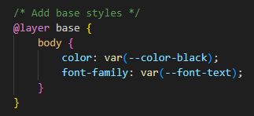

TailwindCSS v4.0
"Design faster, build smarter."
A curated collection of TailwindCSS components, templates and a cheatsheet — because great UI should be effortless.
Getting Started
Adding TailwindCSS to your project has become a 2 second job. Few steps to follow from TailwindCSS docs and you're good to go.
- First thing first, install tailwindcss and tailwindcss/cli:
- Add import to the top of your main css (input.css in this case) file:
- Run the CLI tool to scan source files for classes and build your CSS (make sure you check your file names and paths):
- Add compiled CSS file to head of your html file.
npm install tailwindcss @tailwindcss/cli
@import "tailwindcss";
npx @tailwindcss/cli -i ./path/to/input.css -o .path/to/output.css --watch
or for Django run (check if static folder is in the root):
npx tailwindcss -i ./path/to/input.css -o ./path/to/output.css --watch --content './templates/**/*.html'
<link href="./path/to/output.css" rel="stylesheet">Extra step to make your life easier!
To avoid running full command every time you start developing or need to run build, add this to your package.json file (check your file path obviously):
"scripts": {
"build:css": "tailwindcss -i ./path/to/input.css -o ./path/to/output.css",
"watch:css": "tailwindcss -i ./path/to/input.css -o ./path/to/output.css --watch"}
Now you can use npm run build:css or npm run watch:css instead of running long command.
Build vs Watch Mode
- One-time operation: When you run npm run build:css, TailwindCSS processes your CSS file once and generates the output file.
- Manual triggering: You need to manually run the command again every time you make changes to your CSS.
- Best for: Production deployment or when you're done with development and want to generate the final CSS file.
- Continuous operation: When you run npm run watch:css, TailwindCSS starts a process that stays running in your terminal.
- Automatic detection: It constantly monitors your input CSS file (and any files referenced by your TailwindCSS configuration).
- Automatic rebuilding: Whenever it detects a change in any of these files, it automatically rebuilds your CSS without requiring manual intervention.
- Best for: Active development when you're frequently changing your CSS files.
During development, you would usually want to start watch mode in a terminal and leave it running while you work. This saves you time and updates every css change automatically while you develop.
Congrats, you have finished setting up TailwindCSS v4.0
For other setup ways head over to TailwindCSS website.
Adding Custom Styles
Since TailwindCSS v4.0 does not use a config file by default, you can override styles directly inside your main css file using @layer.
@layer base → For modifying default styles like h1, p, etc.
Example:
@layer components → For reusable custom classes like .btn-primary.
Example:
@layer utilities → For adding extra utility classes.
Example: